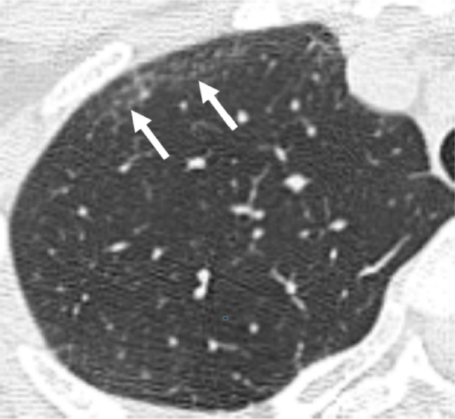

Ficha del catálogo
Patrón en vidrio deslustrado
- Sistema
- Respiratorio
- Modalidad
- TC
- Región
- Tórax
- Dificultad
- Intermedio
Es un aumento de la atenuación pulmonar que no borra los vasos ni los bronquios subyacentes, a diferencia de la consolidación. No es una enfermedad sino un signo que traduce ocupación parcial de los alvéolos, engrosamiento del intersticio o aumento del volumen sanguíneo capilar. Su distribución y los hallazgos acompañantes son los que orientan el diagnóstico.
Técnica
Tomografía de tórax con cortes finos y reconstrucción de alta resolución, valorando siempre con ventana pulmonar adecuada y comparando zonas dependientes y no dependientes.
Qué observar
- Aumento de densidad con vasos y bronquios todavía visibles a su través
- Distribución geográfica, parcheada, difusa o de predominio periférico
- Signo del empedrado cuando se asocia a engrosamiento septal
- Zonas de pulmón respetado que generan un patrón en mosaico
- Consolidaciones asociadas o nódulos centrolobulillares mal definidos
- Comparación con series previas para valorar evolución
Hallazgos
Áreas de mayor atenuación pulmonar con conservación de las estructuras vasculares y bronquiales en su interior, de distribución variable.
Perlas
La diferencia práctica con la consolidación está en si se siguen viendo los vasos: Si se ven, es vidrio deslustrado; si desaparecen y aparece broncograma aéreo, es consolidación. Ese detalle cambia el diagnóstico diferencial por completo.
Diagnóstico diferencial
- Consolidación
- Borra los vasos y suele mostrar broncograma aéreo.
- Atrapamiento aéreo en mosaico
- Las zonas oscuras son las anormales y se acentúan en espiración.
- Edema pulmonar intersticial
- Engrosamiento septal liso, derrame y cardiomegalia acompañantes.
Simuladores
- Zonas dependientes por decúbito
- Espiración incompleta durante la adquisición
- Artefacto de movimiento cardiaco en língula
Por modalidad
- RX
- Poco sensible, puede ser normal con vidrio deslustrado extenso
- TC
- Detecta y caracteriza el patrón y su distribución
Protocolo
Alta resolución en inspiración máxima, con serie espiratoria para diferenciar vidrio deslustrado de atrapamiento aéreo.
Clasificación
Errores frecuentes
- Interpretar las zonas dependientes fisiológicas como enfermedad
- No distinguirlo de la consolidación por no valorar los vasos
- Olvidar la serie espiratoria en el patrón en mosaico

vidrio deslustrado patron intersticial mosaico empedrado alta resolucion consolidacion